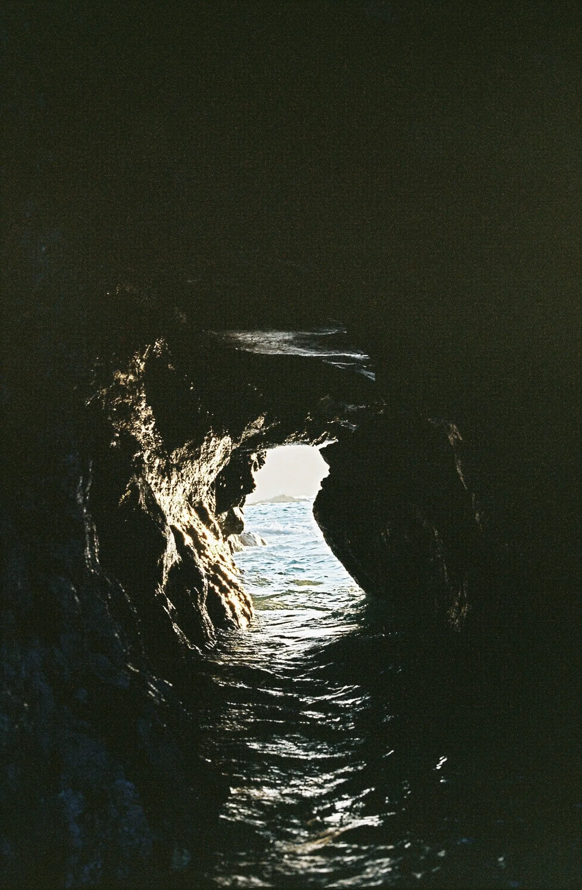
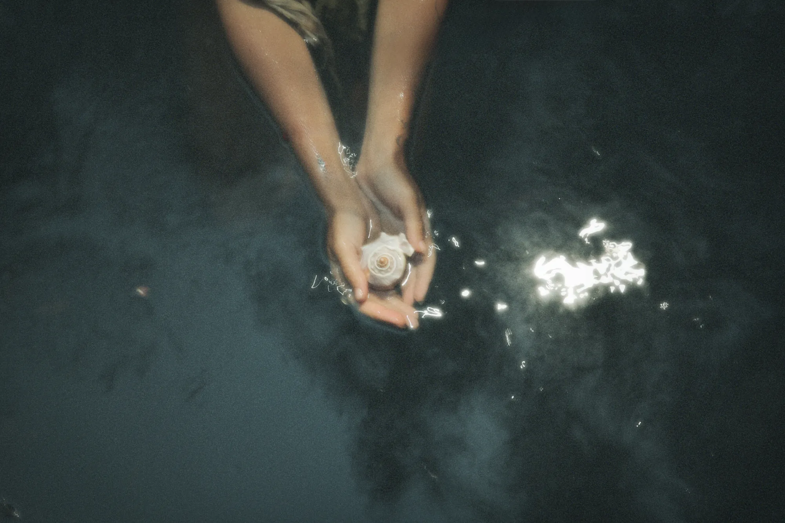

She Who Becomes
A 12-week journey
An inquiry into who you have been, who you are, and what is becoming possible.

There are moments when the life we have constructed around a particular understanding of ourselves begins to change.
The identity that once gave us direction no longer feels sufficient.
An old conviction loses its authority.
A pattern becomes impossible to ignore.
We recognize that something is moving, without yet being able to say precisely what it is.
This twelve-week journey offers a sustained space to investigate these moments.
We explore the stories you have lived by, the assumptions that organize your experience, and the ways you have learned to understand your relationships, choices, and possibilities.
The inquiry moves between psychological understanding, symbolic exploration, reflection, and lived experience.
Rather than approaching transformation as a project of self-improvement, we begin with what is actually present.
We allow contradictions to exist. We examine meanings that have become fixed. We question interpretations that may no longer be adequate to the life you are living.
The purpose is to develop a more conscious relationship with your own experience and with the choices through which your life continues to take shape.
The twelve weeks
A sustained inquiry into identity, meaning, transition, and personal authorship.

We may explore questions such as:
- What am I continuing to believe about myself?
- Where do I recognize the same pattern appearing?
- What has changed in my understanding of what I want?
- Which roles or expectations no longer belong to me?
- What might I need to relinquish, reconsider, or begin?
- What would it mean to participate more consciously in what comes next?
An invitation
This journey is for women who want to remain in serious inquiry with an important period of their lives, rather than rush toward an explanation or immediate resolution.
You are not required to arrive knowing what needs to change.
Only with a willingness to examine what is already asking for your attention.
Explore the 12-week journey
The next journey is being prepared. Book a short conversation with Nina to explore whether it is right for you.